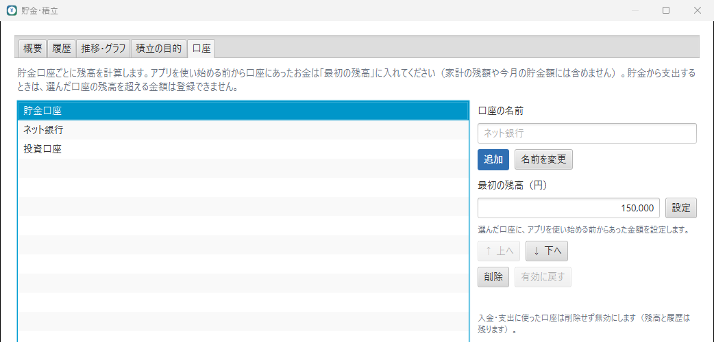
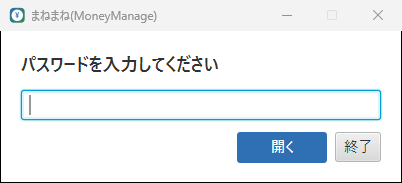

動作環境
- Windows（64bit）
- ディスクの空き容量 約 200MB（展開後）
動作確認済み: Windows 11 Home（64bit）
ダウンロードと起動
- ダウンロード から ZIP ファイルを入手します。
- ZIP を右クリックして「すべて展開」を選びます。
- 展開した
Manemaneフォルダの中のManemane.exeをダブルクリックします。
Manemane フォルダの中身は、まとめて置いたまま使ってください。Manemane.exe だけを別の場所に移すと起動しません。デスクトップから起動したい場合は、ショートカットを作成してください。
初回起動時に「Windows によって PC が保護されました」と表示された場合は、「詳細情報」→「実行」を選んでください。署名のない個人開発のアプリのため表示されます。
新しいバージョンにするとき
新しい ZIP を別のフォルダに展開して Manemane.exe を起動してください。データ（%APPDATA%\Manemane\kakeibo.db）はそのまま引き継がれます。
0.4.0 で一度開くとデータの形式が新しくなり、以前のバージョンでは開けなくなります。更新する前に、今のバージョンの「ファイル」→「バックアップ…」でバックアップを取っておいてください（以前のバージョンのバックアップは 0.4.0 で復元できます）。以前の「投資・積立」の記録は、自動で口座「投資口座」への積立に移ります。
初回セットアップ
初めて起動すると、次の2つを設定する画面が表示されます。
| 項目 | 内容 |
|---|---|
| 通常の給料日 | 毎月の給料日（例: 25日）。土日の場合は直前の金曜日として扱います。 |
| 最初の期間の開始日 | 直近の給料日が入っています。この日より前の明細は登録できません。 |
最初の期間の「前月繰越」は 0 円で始まります。これまでの家計簿から引き継ぐ金額がある場合は、メイン画面の「前月繰越」カードの「編集」で入力してください（不足している場合はマイナス）。
メイン画面の見方

| 表示 | 内容 |
|---|---|
| 期間 | 給料日から次の給料日の前日まで。最新の期間の終了日は、次の給料日（土日の場合は直前の金曜日）の前日です。開始日を間違えたときは、期間の下の「開始日を変更」で直せます。 |
| 収入 | 期間内の収入の合計 |
| 前月繰越 | 前の期間の残額（不足ならマイナス） |
| 利用可能金額 | 収入 ＋ 前月繰越 |
| 固定費・変動費 | 期間内のそれぞれの合計 |
| 貯金・積立 | 期間内に家計から貯金口座へ移した額（NISA などの積立を含む）。下に全部の貯金口座の今の残高も出ます（「詳細」で貯金・積立の画面を開きます） |
| 残額 | 利用可能金額 − 固定費 − 変動費 − 貯金・積立。マイナスのときは赤く表示されます。貯金・ポイントで支払った支出は差し引きません。 |
右側には、今月と前月の支出、ポイントで得した額（今月と累計）、カテゴリ別の支出のグラフが表示されます。明細の一覧は「全て／収入／固定費／変動費／貯金・積立／ポイント払い」で絞り込めます。列の見出しからは、並べ替えや値ごとの絞り込みもできます（次の項目）。
並べ替え・絞り込み
明細の一覧の列の見出し（区分・日付・項目・カテゴリ・支払方法・金額・メモ）をクリックすると、Excel のフィルターのようなメニューが開きます。

- 並べ替え … 日付は「古い順／新しい順」、金額は「小さい順／大きい順」、文字は五十音順。「並べ替えを解除」で元の順（日付順）に戻ります。
- 絞り込み … 表示したい値にチェックを入れて「OK」。検索欄に入力すると、値の一覧を絞り込めます。空欄の値は「（空白）」と表示されます。
- 複数の列で同時に絞り込めます。上の「全て／収入／固定費…」のボタンとも組み合わせられ、期間を切り替えても絞り込みは残ります。
- 絞り込み中の列は見出しが青くなり、漏斗の印が付きます。並べ替え中の列には ↑ ↓ が付きます。下の欄には「（絞り込み中: ◯件中）」と表示されます。
- 「並べ替え・絞り込みを全解除」で、元の表示に戻ります。
キーボードでは、一覧で Alt + ↓ を押すとメニューが開きます。メニューの中では ← → で隣の列に移り、Space でチェックの切り替え、Enter で決定、Esc で閉じます。
並べ替え・絞り込みは表示だけの変更です。登録されている明細や集計の金額は変わりません。
明細の登録・編集
「+ 支出」または「+ 収入」を押して入力し、「保存」を押します。

- 区分 … 支出は「固定費／変動費」、収入は「固定／変動」（貯金・積立は「+ 貯金」から登録します）。
- 項目 … 入力すると過去の項目名が候補に出ます。候補を選ぶと、前回のカテゴリと支払方法が入ります。
- 支払元 … 支出のとき、家計・ポイント・貯金口座のどれで払ったかを選びます（ポイント払い・貯金・積立）。
- 保存して続けて入力 … 日付と区分を残したまま、次の明細を入力できます。
編集・削除・複製
- 編集: 行をダブルクリック、または行を選んで Enter
- 削除: 行を選んで Delete（確認が表示されます）
- 複製: 行を右クリック →「複製して追加」
電子マネー（PayPay・交通系 IC など）は「チャージした金額」を支出として登録し、カテゴリを「電子マネーチャージ」にします。チャージ残高から払った買い物は、二重になるため登録しません。
ポイント払い
楽天ポイント・dポイントなどで支払った買い物は、支払元を「ポイント（残額から引かない）」にして登録します。

- 家計のお金は減らないため、残額・支出合計・カテゴリ別の支出には含めません。
- 明細一覧では区分が「ポイント払い」（紫の帯）になります。
- メイン画面右側の「ポイントで得した額」に、その期間の合計と、これまでの累計が表示されます。
- ポイントの残高（貯まった額・失効した額）は管理しません。ポイントと現金を併用したときは、別々の明細にしてください。
新しい期間と繰越
給料が入ったら
「新しい期間を開始」を押します。給料日には次の給料日の予定日が入っています（実際の給料日と違えば変更します）。確定する期間と繰り越す金額を確認して「開始」を押してください。
「有効な固定費を新しい期間に反映する」にチェックがあると、登録済みの固定費が新しい期間に自動で登録されます。
繰越
期間の残額は、プラスもマイナスも次の期間の「前月繰越」へ自動で引き継がれます。「前月繰越」カードの「編集」から手入力で上書きでき、「自動計算」に戻すこともできます。
開始日を間違えたとき
期間の下の「開始日を変更」を押します。通常の給料日（土日の場合は直前の金曜日）が入っているので、確認して「変更」を押してください。前の期間の終了日も一緒に変わり、明細は日付に合わせてどちらかの期間に振り分けられます（例: 25日払いで 10/25(日) と入力してしまった → 10/23(金) に変更すると、前の期間は 9/25〜10/22 になります）。
固定費
メニュー「管理」→「固定費…」で、家賃・サブスク・積立などを登録します。項目名・種類（支出／貯金）・金額・支払日（毎月◯日）・カテゴリ・支払方法を設定できます。種類を「貯金」にすると入金先の貯金口座と積立の目的を選べ、期間に反映すると積立として登録されます（NISA などの毎月の積立に使えます）。
メイン画面の「固定費を反映」で、表示中の期間に明細として登録します。支払日は期間内の日付に置き換えられ（例: 期間 9/25〜10/22 で 27日払い → 9/27）、同じ期間に二重に登録されることはありません。
集計（グラフ・年間）
メイン画面の右側で、今月・前月の支出と前月との差、カテゴリ別の支出（金額と割合）を確認できます。
年間の収支
メニュー「集計」→「年間の収支…」で、1月1日〜12月31日の収入合計・支出合計・収支と、月別の表を確認できます。給料日の期間ではなく、明細の日付で集計します（繰越は含みません）。支出合計には貯金への入金を含みます。「貯金から支出」「ポイント払い」は家計の収支に含めない参考の列です。

貯金・積立
給料から貯金に回したお金を「貯金」として記録し、口座ごとの残高・積立の目標と実績・貯金から使ったお金を管理できます。メニュー「集計」→「貯金・積立…」（またはメイン画面の「貯金残高」の「詳細」）で開きます。

貯金する
メイン画面の「+ 貯金」で、日付・貯金額・貯金口座・積立の目的・貯金の種類・メモを入力します。貯金した額は、その期間の残額から差し引かれます（家計から出ていくお金のため）。

- 積立 … 「積立の目的」（旅行・生活防衛資金など）を選んだ貯金です。目的ごとに1期間あたりの目標額を設定でき、今月の目標と実績・達成率を確認できます。目標額を設定しただけでは貯金残高は増えません。
- 貯金から支出 … 支出の入力で「支払元」に貯金口座を選びます。その口座の残高が減り、家計の残額は減りません。口座の残高を超える金額は登録できません。明細一覧では区分が「貯金から支出」になります。
- 最初の残高 … アプリを使い始める前から口座にあったお金です。「口座」タブで口座を選び、「最初の残高（円）」に金額を入れて「設定」を押します。貯金残高に足されますが、家計の残額・今月の貯金額・入金の累計・積立には含めません。最初の残高の分も、貯金から支出に使えます。

集計のきまり
| 表示 | 計算 |
|---|---|
| 貯金残高 | 最初の残高 ＋ 入金の累計 − 貯金からの支出の累計（口座ごと・全口座） |
| 積立額の累計 | 積立の目的を選んで入金した額の累計（貯金から使っても減りません） |
| 貯金からの累計支出額 | 貯金口座から支払った支出の累計 |
| 達成率 | 今月の積立額 ÷ 今月の積立目標 |
「今月」「月別」は給料日の期間です。年別は期間の開始日の年でまとめます。NISA などの積立も、貯金口座（例:「投資口座」）への積立として記録します。
画面のタブ
- 概要 … 残高・累計・今月の貯金額・積立額・目標と達成率、口座ごとの残高、目的ごとの進み具合
- 履歴 … 入金と貯金からの支出の一覧（種別・年・口座で絞り込み、見出しで並べ替え）。登録後の残高も表示し、ダブルクリック・Enter で編集、Delete で削除できます。
- 推移・グラフ … 月別／年別の表と、貯金額・積立額・積立目標・貯金からの支出の棒グラフ、貯金残高の折れ線グラフ
- 積立の目的・口座 … 追加・名前（と目標額）の変更・並べ替え・削除。口座タブでは「最初の残高」も設定できます。

残高は記録から毎回計算し直すため、過去の記録を変更・削除しても正しく保たれます。ただし、変更・削除で残高が途中でマイナスになる場合（先に貯金から使っている場合）はできません。先に貯金からの支出を変更・削除してください。
カテゴリ・支払方法
メニュー「管理」→「カテゴリ・支払方法…」で、追加・名前の変更・並べ替え・削除ができます。カテゴリは「収入／支出／貯金の種類」ごとに管理します。明細や固定費で使われているものは、削除の代わりに「無効」になります（過去の明細には残り、新しい入力の選択肢から消えます）。「無効も表示」にチェックすると、有効に戻せます。
起動時のパスワード
メニュー「設定」→「設定…」の「起動時のパスワード」で、アプリを開くときにパスワードの入力を求めるようにできます。

- オンにする … 「パスワードを設定して有効にする」を押し、パスワード（4〜64文字）を確認用と合わせて2回入力します。
- オフにする・もう一度オンにする・変更する … どれも現在のパスワードの入力が必要です。
- オフにしても、設定したパスワードは残ります（もう一度オンにするときに使います）。
オンのときは、起動するとパスワードの入力画面だけが表示されます。正しいパスワードを入力するまで、明細や集計は表示されません。

パスワードを忘れると、アプリを開けなくなります（再設定の方法はありません）。また、これはアプリを開くときの確認で、データのファイル自体は暗号化されません。バックアップから復元すると、パスワードの設定もバックアップした時点のものに戻ります。
バックアップと PC の移行
- バックアップ … メニュー「ファイル」→「バックアップ…」で保存先を選びます。USB メモリやクラウドのフォルダに定期的に保存しておくと安心です。
- 復元 … メニュー「ファイル」→「バックアップから復元…」でファイルを選びます。中身（明細の件数など）を確認してから置き換えます。置き換える前のデータは自動で保存されます。
パソコンを買い替えるとき
- 古いパソコンでバックアップを作ります。
- 新しいパソコンでアプリを起動します（初回セットアップの内容は何でも構いません）。
- 「バックアップから復元…」で 1. のファイルを選びます。
Excel の書き出し・取り込み
書き出し … メニュー「ファイル」→「Excel に書き出す…」。「表示中の期間」か「すべての期間」を選ぶと、「明細」「集計」「カテゴリ別」の3つのシートができます。
取り込み … メニュー「ファイル」→「Excel から取り込む…」。取り込む前に、取り込める行・取り込めない行（理由付き）・既存の明細と重複の可能性がある行を確認できます。
取り込むファイルの形式
読み込むのは「明細」シートだけです（なければ最初のシート）。1行目が見出し、2行目からが明細です。列の順番は自由です。
| 列名 | 必須 | 書き方 |
|---|---|---|
| 日付 | ○ | 2026/10/04 など（Excel の日付でも可） |
| 種類 | ○ | 収入／支出／貯金（以前の「投資・積立」も貯金として読みます） |
| 項目 | ○ | 例: スーパー |
| 金額 | ○ | 整数の円（1,200 や 1200円 も可） |
| カテゴリ | ○ | アプリに登録済みの名前と同じにする |
| 固定/変動 | 固定／変動（空欄なら変動） | |
| 支払方法 | 登録済みの名前（収入の行は空欄） | |
| メモ | 自由 | |
| 貯金口座 | 貯金なら入金先（必須）。支出なら貯金から支払った口座 | |
| 積立の目的 | 貯金のみ。登録済みの目的の名前（空欄なら積立ではない貯金） | |
| ポイント払い | 支出のみ。ポイントで払った明細は ○（空欄なら通常の支出） |
いちばん確実なのは、一度書き出したファイルの「明細」シートをひな形にして、行を書き足す方法です。
キーボードの操作
| キー | 操作 |
|---|---|
| F1 | 使い方を表示 |
| Ctrl + N | 支出を追加 |
| Ctrl + I | 収入を追加 |
| Alt + ← / → | 前の期間／次の期間 |
| Enter（一覧で） | 選んだ明細を編集 |
| Delete（一覧で） | 選んだ明細を削除 |
| Alt + ↓（一覧で） | 選んだ列の並べ替え・絞り込みのメニューを開く |
| Esc | 入力画面を閉じる |
データの保存場所・削除
データは %APPDATA%\Manemane\kakeibo.db に保存されます（エクスプローラーのアドレス欄に %APPDATA%\Manemane と入力すると開けます）。インターネットへの送信は行いません。
アプリを削除するときは Manemane フォルダを削除してください。データも消す場合は、上の保存場所のフォルダも削除します。
困ったとき
| 症状 | 対処 |
|---|---|
| 起動しない | Manemane.exe と同じ場所に app・runtime フォルダがあるか確認してください。 |
| アイコンが古いまま | エクスプローラーで F5 を押すか、フォルダを開き直してください。 |
| 「新しいバージョンのアプリで作成されています」 | 新しいバージョンで保存されたデータです。アプリを更新してください。 |
| 明細が登録できない（日付のエラー） | 最初の期間の開始日より前の日付は登録できません。 |
| Excel が取り込めない | Excel でそのファイルを開いている場合は閉じてください。確認画面の「理由」に原因が表示されます。 |